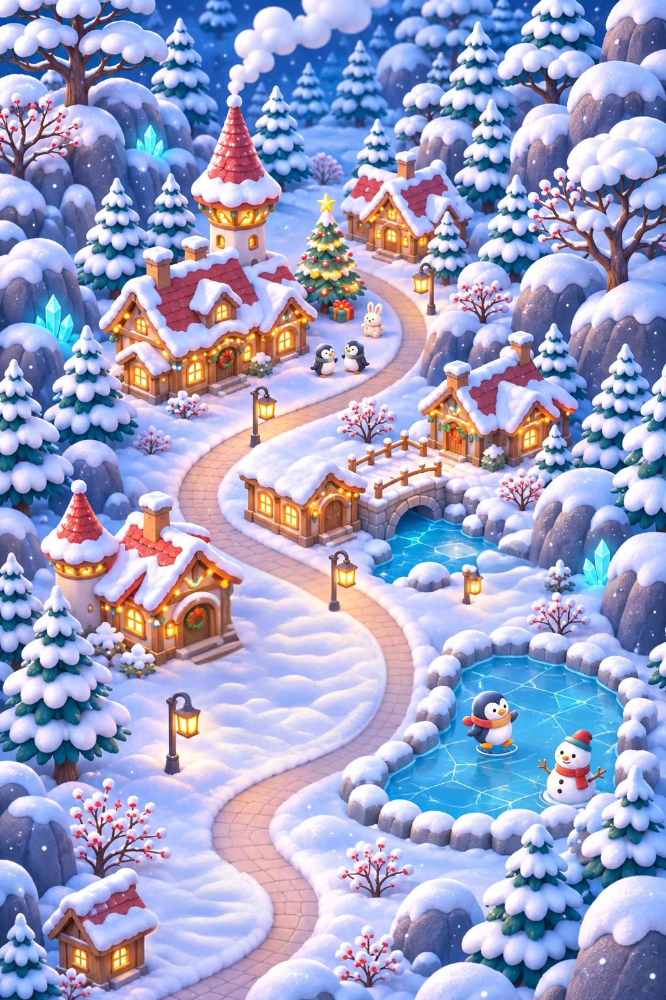

Загружаем зимнюю карту…

Прокручивайте карту. Пройдите текущий уровень, чтобы открыть следующий. Голубые уровни заблокированы. Заработайте звёзды и вернитесь на карту, чтобы перейти к следующему уровню.